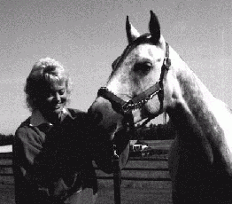
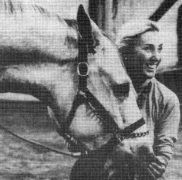

Julie Jené, horse trainer, equine arts instructor, and certified TT.E.A.M. practitioner, combined her 20 years of participation in the horse world, her search for more effective training methods and her desire to pass this information on to others when she encountered TT.E.A.M. nearly fifteen years ago.
Julie had been searching for an approach which went beyond "kind and gentle" horse training and found it in the TT.E.A.M. method. She discovered ways to prevent and solve problems in training through relieving discomfort in the body of the horse as well as enhancing physical and mental ability through working with the horse's unique type of intelligence. She found that using TT.E.A.M. to open new forms of communication between humans and other animals is exciting and gratifying.
Trained by Linda Tellington-Jones and her sister Robyn Hood, Julie practices and teaches these techniques at her training facility near Spokane and in workshops around the United States and Canada. Most people are able to learn and utilize TT.E.A.M techniques in a very short time, helping to alleviate pain, fear and tension and restoring calm and confidence. TT.E.A.M. techniques work without pain, fear or force creating a partnership between humans and the animals we care for.
|  |
| "TT.E.A.M. has helped ALL of my horses - from behavior problems to improved performance. " |
| Sarah Metcalf, D.V.M. |
TT.E.A.M. (or Tellington-Jones Equine Awareness Method) was developed by internationally know teacher, trainer and author Linda Tellington-Jones. She created this revolutionary technique for animals inspired by her four years' of professional training with Dr. Moshe Feldenkrais and his work on the method of functional integration and body work. It is an alternative approach to training and healing horses that relieves pain or tension in the horse's body, often the cause of resistances and behavior problems, through non-threatening manipulations known as TTouch. TTouch combines with unique TT.E.A.M. Ground and Awareness Exercises and Riding with Awareness Techniques, frequently resulting in permanent changes in personality, behavior and improved performance. Even problems that are commonly considered in the horse world to be unchangeable can often be solved using the three phases of TT.E.A.M.
The TT.E.A.M. techniques are rapidly becoming known as an effective and gentle approach to solving behavior problems in companion animals, zoo animals and other exotic species and have come to be called the "Tellington-Jones Every Animal Method"!
|  |
| "When our dog, Miko, was disabled, Julie used TTouch to help him happily live for another year - relieved of his symptoms. He could even go for walks again! Julie taught us how to use TT.E.A.M. to help him ourselves, too." |
| Patricia Yacker, MS., CMHC. |
| "TT.E.A.M. has done amazing things for me and my horse. After nearly giving up on his lunatic antics and explosive behavior, I now enjoy a confident, trustworthy trail horse!" |
| S. Journey |
Through ongoing development of these techniques, it has become apparent that this work with horses (and other animals) can not only overcome resistance by can also reduce stress, relieve back pain, lameness, unevenness of gait, balance problems, reduce inner tension, speed healing, reduce resistance to vet and farrier, and problems with: saddling and grooming, bucking and rearing, cinchiness, acceptance of clipping, shots, mane pulling, pulling back when tied, biting and kicking, shying, trailering and other difficult situations. Horses trained in this method demonstrate a markedly improved willingness and ability to learn. The TT.E.A.M. ground exercises offer horses and opportunity to experience new ways of moving and overcoming old behavior patters. Experiencing these exercises, without pain, fear or force, results in obedience, self control, self-confidence, balance and coordination. Riding with awareness uses principles of Feldenkrais work, Centered Riding and classical dressage to make riding with joy a reality for people from all parts of the horse world!
Contact Julie by phone at (509) 924-9739 or by email at julie@horseandpeopletraining.com.